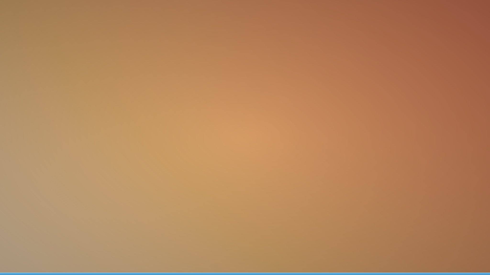

Кошка мчится к двери, хвост поднят вертикально — трубой. Это один из самых считываемых сигналов кошачьего языка тела, и он означает ровно противоположное тому, что думают многие. Не угроза, не раздражение — высшая форма приветствия. Этологи описали этот сигнал ещё в исследованиях 2002 года. Как правильно на него ответить — и какие три ошибки совершают даже опытные хозяева.
Исследователь Сьюзан Камерон-Бомон в 2002 году описала «tail-up» как специфический сигнал социального приветствия у домашних кошек. В отличие от диких одиночных кошачьих, домашние кошки развили этот сигнал именно в контексте взаимодействия с людьми и другими кошками из «своей» группы.
Вертикальный хвост (tail-up) означает:
В дикой природе котята поднимают хвост перед матерью, когда просят еду или приближаются для кормления. Взрослые домашние кошки перенесли этот сигнал на взаимодействие с людьми — они буквально обращаются к вам как к значимой фигуре привязанности.
🐾 Первая помощь — всегда под рукой
AnimaLife подскажет, что делать в тревожной ситуации с питомцем ещё до визита к врачу. Откройте в один тап.
Не все «хвосты трубой» одинаковы. Форма хвоста при подъёме уточняет сообщение:
Правильный ответ на tail-up — встречный сигнал, понятный кошке:
Ошибка 1: немедленно схватить кошку на руки. Tail-up означает готовность к контакту, но не к принудительным объятиям. Кошка выбрала момент и форму взаимодействия — дайте ей управлять этим процессом. Схватить на руки без разрешения — нарушить кошачий протокол, и следующий tail-up может быть более осторожным.
Ошибка 2: игнорировать сигнал. Кошка подошла с поднятым хвостом — а вы прошли мимо. Для кошки это отказ от контакта. Повторяющееся игнорирование снижает частоту инициативных приветствий: кошка учится, что её приглашения не принимаются.
Ошибка 3: немедленно чесать живот. Tail-up — это приглашение к приветствию, а не к интенсивному поглаживанию. Живот — самое уязвимое место, многие кошки не любят, когда его трогают без подготовки. Начните с подбородка или щёк — там у кошек железы, выделяющие феромоны, и прикосновение туда воспринимается позитивно.
Вертикальный хвост не всегда приветствие — контекст важен:
🐾 Экономьте на лишних визитах к врачу
Сначала спросите AI-ветеринара в AnimaLife — часто этого достаточно, чтобы понять, нужен ли визит к врачу.
🐾 Понравился разбор?
Подпишитесь на канал — каждый день разбираем по одному тревожному симптому у кошек и собак: что в пределах нормы, а когда пора к врачу. Подпишитесь, чтобы не пропустить разбор, который может спасти здоровье вашего питомца.
Хвост трубой при встрече — высший комплимент от кошки. Она выбрала вас как значимый социальный контакт и сообщает об этом на своём языке. Правильный ответ — небольшой, но считываемый ответный сигнал: медленное моргание, предложить руку для обнюхивания, дать потереться. Детально про хвостовой язык кошек читайте в статье про язык хвоста, а про медленное моргание — в разборе slow blink.